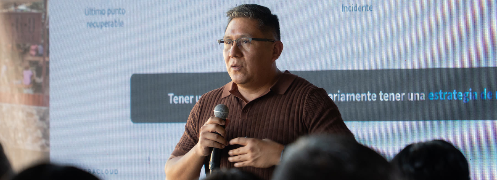
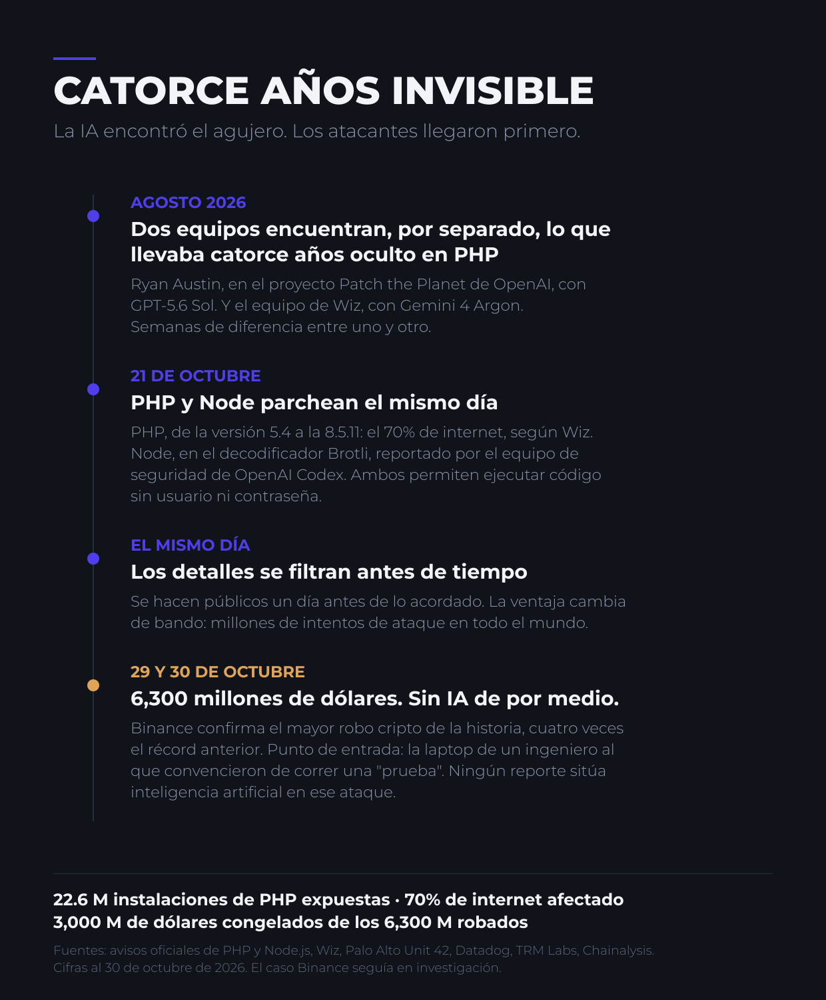
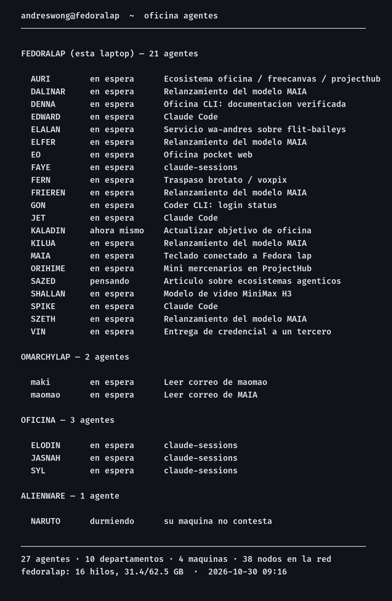

Portada pendiente
Noviembre 2026.
Contenido.
Vol. 03Noviembre 202634 páginas
-
03
Carta del fundador · Josué Madera
Hablemos de tecnología, pero hablemos juntos
-
06
Ciberseguridad · Francisco Olazo
Octubre negro
-
12
Innovación regional · Baja Innovation Day
Perspectivas Baja Innovation Day
-
15
Ciberseguridad e IA · Andrés Wong
Catorce años invisible
-
21
Comunidad · ALTI
Construyendo el ecosistema tecnológico de Baja California
-
26
Mentor ALTI · Alfredo [apellido por confirmar]
La IA y el futuro de los profesionales de tecnología
-
33
Cierre
Seis ideas para el lunes
Carta del fundador
Hablemos de tecnología, pero hablemos juntos.
Una revista para quienes hacen funcionar la tecnología en México, sin importar la industria.
Si trabajas en TI, sabes que tu labor rara vez se ve, pero todo depende de ella. No importa si estás en una empresa de logística, en un hospital, en una cadena de retail, en una agencia automotriz, en una marca de belleza, en un gimnasio o en una planta de producción. Cuando algo falla, todos voltean a verte. Cuando todo funciona, nadie pregunta por qué.
Esta revista es para ti.
En México se hace tecnología todos los días, en todas las industrias y en empresas de todos los tamaños. Aun así, durante mucho tiempo esa historia casi no se contaba, o se contaba desde afuera, con casos de otros países y realidades que poco se parecen a las nuestras.
Llevo años en la industria de la tecnología, y si algo he aprendido es que el talento nunca ha sido el problema. Lo que nos falta es conexión. Responsables de TI en sectores completamente distintos enfrentan los mismos retos (seguridad, presupuesto, nube, inteligencia artificial, falta de personal) sin haberse conocido nunca. Hay soluciones probadas en una industria que podrían transformar otra, si tan solo alguien las compartiera.
De esa observación nació todo lo demás.
Así surgió el Foro de Tecnología MX, un punto de encuentro donde fabricantes, integradores, universidades y usuarios de tecnología se sientan en la misma mesa a hablar de lo que realmente está pasando en sus empresas.
Así nació ALTI, la Alianza de Líderes en Tecnología e Innovación, un espacio entre pares exclusivo para quienes toman decisiones de TI. Ahí un CTO puede hablar con franqueza con otro CTO sobre lo que funciona, lo que no y lo que viene, sin presentaciones comerciales de por medio. Con iniciativas como Mentor ALTI buscamos que ese conocimiento circule todos los meses, no solo en un evento al año.
Desde la Dirección del Comité de Tecnologías de la Información de INDEX Zona Costa, el reto ha sido llevar la inteligencia artificial del discurso a la realidad de las empresas. Queremos entender dónde están realmente, más allá del entusiasmo o del miedo que provoca la palabra "IA".
Con Tech & Wine Fest confirmamos algo que siempre sospeché: las mejores conversaciones de tecnología suceden cuando la gente baja la guardia y se permite conectar como personas.
Y desde EnteraCloud y Purple AI vivo el otro lado: la operación diaria, la implementación, los proyectos reales que a veces salen perfectos y a veces enseñan más cuando no.
Ninguno de estos esfuerzos es un proyecto suelto. Todos responden a una misma convicción: un país avanza más rápido cuando su comunidad tecnológica se conoce, colabora y comparte lo que sabe. Ningún profesional de TI debería enfrentar solo sus decisiones, sin importar la industria en la que esté.
Esta revista es el siguiente paso de ese camino. Es un espacio para documentar lo que estamos construyendo y para darle voz a quienes lo hacen posible.
En estas páginas van a encontrar casos reales de empresas mexicanas de todos los sectores y las voces de líderes de TI que están tomando decisiones difíciles. También tendencias aterrizadas a nuestra realidad, sin traducciones forzadas, y una mirada honesta a lo que significa liderar tecnología hoy en México.
Pero quiero ser claro en algo: esta revista no es mía, es de ustedes. Si tienen un proyecto que contar, una lección aprendida, una opinión que incomoda o una pregunta que nadie se ha atrevido a hacer, este es su lugar. Escriban, propongan, cuestionen. Y si esta conversación les hace sentido, quédense: cada edición será mejor con más profesionales de TI de todo el país sumándose a ella.
Bienvenidos a esta primera edición. Bienvenidos a la conversación.
Hablemos tech.
“Ningún profesional de TI debería enfrentar solo sus decisiones, sin importar la industria en la que esté.”
Josué Madera · Carta del fundador

CiberseguridadOctubre negro.
Responder con seriedad, calma y estrategia. Lo que dejaron las vulnerabilidades de octubre, y una ruta para atenderlas sin frenar la operación.
Por Francisco Olazo · Enteracloud
Octubre nos recuerda que las vulnerabilidades pueden afectar tecnologías distintas y ampliamente utilizadas. El equipo de PHP publicó actualizaciones para corregir dos fallas críticas que podían permitir ejecución remota de código sin autenticación. La CISA —Agencia de Seguridad de Infraestructura y Ciberseguridad de Estados Unidos, organismo federal que coordina la ciberdefensa y apoya la protección de infraestructura crítica— reportó explotación activa de vulnerabilidades y las incorporó a su catálogo KEV, que reúne fallas con evidencia de explotación.
Entre los hallazgos de octubre destacan PHP2Shell (CVE-2026-109618 y CVE-2026-109619), vulnerabilidades críticas de PHP; CVE-2026-96951, una falla de Windows Shell explotada antes de publicarse su corrección; y vulnerabilidades en BeyondTrust Remote Support, Collabora Online, Adobe Commerce / Magento y Brotli que también fueron señaladas por explotación activa. Para los administradores, la referencia práctica es revisar si estos productos o componentes están en el inventario y priorizar los que estén expuestos o soporten servicios críticos.
También conviene distinguir entre incidentes que a veces se agrupan bajo la etiqueta de “fallas de Microsoft”. La interrupción global de julio de 2024 que afectó operaciones de aerolíneas y aeropuertos no fue causada por un parche de Windows: CISA y Microsoft la atribuyeron a una actualización de contenido de CrowdStrike Falcon que provocó fallos en equipos Windows.
Por otro lado, Microsoft documentó un problema distinto tras sus updates de seguridad de septiembre de 2026 para Windows Server: en algunos entornos, Remote Desktop Services se volvió inestable, las conexiones RDP fallaban, los inicios de sesión se detenían y algunos servidores quedaban bloqueados durante la configuración de Escritorio remoto. Microsoft publicó una actualización correctiva fuera de banda. Es un ejemplo concreto de por qué un parche también debe tratarse como un cambio operativo que requiere control y verificación.
Sabemos si una actualización deja inestable RDS, quizá las aplicaciones sigan bien, pero los usuarios no pueden entrar a ellas desde sus sesiones RDSH. Ahí se frenan tareas de Contpaqi, nómina, logística, ERP o aduanas, tanto para quienes están en la oficina como para quienes se conectan desde fuera.
Y todos sabemos que unos minutos de interrupción pueden convertirse en horas de trabajo perdido, costos o problemas con clientes. Por eso, además de preguntarnos qué puede fallar, vale la pena preguntarnos: ¿cuánto tiempo podría operar la empresa sin acceso a estos sistemas?
Herramientas para tener más control
Las herramientas ayudan a convertir información dispersa en visibilidad y acciones. No es necesario adquirirlas todas ni desplegarlas a la vez; conviene elegirlas según el tamaño, la arquitectura y la capacidad operativa del equipo.
Para descubrir activos y evaluar vulnerabilidades
Greenbone Community Edition (OpenVAS): permite evaluar vulnerabilidades en sistemas y redes. Es una alternativa open source para empezar a medir la exposición técnica.
Wazuh: reúne funciones de monitoreo de seguridad, análisis de registros, evaluación de configuración y detección de vulnerabilidades en endpoints y cargas de trabajo en la nube.
Trivy: revisa imágenes de contenedores, repositorios, archivos e infraestructura como código para encontrar vulnerabilidades y errores de configuración. Es especialmente útil en entornos con Docker y Kubernetes.
Para observar el rendimiento y detectar comportamientos anómalos
Prometheus, Grafana y Loki: pueden formar una base open source para recolectar métricas, visualizar el estado de la infraestructura y centralizar registros. Prometheus se enfoca en métricas y alertas; Loki, en registros; Grafana ayuda a consultarlos en tableros.
Falco: observa actividad en tiempo de ejecución y genera alertas ante comportamientos sospechosos en hosts, contenedores y Kubernetes.
Para estandarizar y acelerar la remediación
Ansible: permite definir tareas repetibles mediante playbooks, por ejemplo, para desplegar configuraciones o ejecutar acciones controladas en varios servidores. La automatización debe incluir pruebas, ventanas aprobadas y una opción de reversa.
Para una pyme, no siempre hace falta empezar con Tenable o Qualys. Una base práctica puede ser Defender for Business para proteger equipos, Datto RMM para controlar parches y Huntress si se necesita monitoreo y respuesta 24/7.
Si hay tiempo y experiencia para administrarlo, Wazuh es una alternativa open source. En entornos más grandes, Tenable, Qualys, Rapid7, Datadog o Splunk pueden dar mayor alcance; lo importante es elegir herramientas que el equipo realmente pueda operar y atender.
¿Qué papel puede jugar Datto?
Datto RMM puede ayudar a controlar el despliegue de parches mediante políticas, ventanas de instalación y opciones para aprobar, rechazar o excluir actualizaciones en dispositivos específicos. Una práctica útil es probar primero los cambios en un grupo piloto y ampliar el despliegue cuando se confirme que los servicios críticos funcionan.
Datto RMM no garantiza que un parche no cause problemas ni reemplaza una solución de respaldo. Para reducir el impacto de una actualización fallida, la empresa también necesita respaldos recientes, procedimientos de recuperación probados y una vía de administración alternativa cuando RDP no esté disponible. Las capacidades concretas dependen de la solución de respaldo o BCDR implementada.
La herramienta no sustituye el criterio
Un tablero con cientos de alertas no equivale a control. El equipo necesita saber qué sistemas son críticos, quién es responsable de cada uno y qué nivel de exposición puede aceptar la empresa. Para priorizar, hay que combinar varios factores: explotación confirmada, exposición a internet, criticidad del activo, impacto al negocio y disponibilidad de una corrección.
Una ruta práctica puede empezar así
- Confirmar el alcance: revisar inventario, versiones, servicios expuestos y responsables.
- Priorizar por riesgo: atender primero activos críticos accesibles desde internet y fallas con explotación confirmada.
- Probar antes de ampliar: validar las actualizaciones en sistemas piloto y revisar dependencias con RDP, aplicaciones y servicios críticos.
- Remediar con control: programar ventanas, respaldar, documentar medidas temporales y definir una ruta de recuperación si algo falla.
- Verificar y comunicar: confirmar que el parche se aplicó, revisar registros y reportar a la empresa el riesgo, las acciones, los responsables y los tiempos previstos.
La dirección estratégica no consiste en prometer que nada ocurrirá. Consiste en conocer los activos, reducir la exposición, asignar responsables y mantener informados a quienes dependen de la tecnología. El equipo necesita prioridades claras; la empresa necesita entender el riesgo y respaldar las decisiones.
Los incidentes recientes muestran cómo una actualización o vulnerabilidad puede interrumpir servicios esenciales.
Para las organizaciones, estos eventos son un recordatorio de que la gestión de actualizaciones, la protección de los servicios y la preparación para recuperar la operación son responsabilidades clave. La continuidad depende tanto de prevenir como de saber responder cuando un sistema deja de estar disponible.
“Un tablero con cientos de alertas no equivale a control.”
Francisco Olazo · Octubre negro
Baja Innovation Day
Perspectivas Baja Innovation Day.
Integrar tecnología en una operación real rara vez fracasa por falta de herramientas; suele complicarse por cómo se planea el cambio, qué tan conectada está la empresa con el talento local y cómo responde a las exigencias de su sector. Durante el Baja Innovation Day, conversamos con distintas voces de la industria, la ciencia y el agrotech, quienes coincidieron en un punto común: innovar en la región exige pasar de la intención a la ejecución gradual y con propósito.
Al preguntar cuáles son las ideas erróneas más comunes que tienen las empresas cuando buscan integrar tecnología o automatización, la respuesta apuntó a la ambición de querer transformar todo el sistema desde el primer día. Cuando una organización intenta automatizar su operación de golpe, sin antes estandarizar procesos ni dividir el proyecto en etapas, el esfuerzo suele traducirse en sobrecostos, retrasos y nuevos cuellos de botella. La clave está en avanzar por partes: ordenar primero la operación base y escalar paso a paso.
Esa búsqueda de competitividad también está cambiando la relación entre la industria y la academia. Al cuestionar cómo han visto el interés de las empresas en Baja California por invertir en ciencia e investigación tecnológica, representantes del CICESE (Centro de Investigación Científica y de Educación Superior de Ensenada)—uno de los 27 centros coordinados por la Secretaría de Ciencia, Humanidades, Tecnología e Innovación—destacaron que, desde inicios de la década de 2010, ha crecido la apertura empresarial para desarrollar I+D interno y crear productos y servicios de mayor valor agregado.
Aunque aún se requiere mayor impulso, centros como el CICESE y universidades como la UABC trabajan en llevar las soluciones del laboratorio a la planta productiva, demostrando que México cuenta con la capacidad científica local para resolver retos complejos sin depender siempre del extranjero.
En el terreno sectorial, al indagar sobre cuál es el reto principal que enfrenta el sector ganadero para adoptar tecnología y salir de su operación rutinaria, el diagnóstico desde el ámbito agrotech —donde hoy se impulsa el llamado “Internet de las Vacas” con presencia en 25 estados de México y siete países— fue claro: la barrera más fuerte no es técnica, sino cultural, pues los pequeños productores suelen sentirse alejados del mundo digital. Para cerrar esa brecha, se ha apostado por democratizar la tecnología mediante aplicaciones gratuitas, tutoriales y capacitación, conectándolos a la economía digital para equilibrar la balanza frente a los grandes compradores.
Finalmente, ante la pregunta de cuál es el desafío que enfrentan hoy las maquiladoras para responder a las estrictas regulaciones ambientales, se señaló el manejo del agua residual como uno de los puntos más críticos, dado que las plantas industriales no pueden descargar agua contaminada sin un proceso previo. Para atender esta exigencia normativa desde Tijuana, se presentó un sistema automatizado que combina sensores, lámpara UV y difusores de nanoburbujas de ozono para desinfectar vegetales y tratar el agua de forma eficiente antes de su descarga.
El Baja Innovation Day deja claro que la transformación tecnológica en nuestra región avanza cuando se construye con pragmatismo: automatizando por fases, aprovechando la ciencia local, cerrando brechas culturales y resolviendo retos reales de sostenibilidad.
“La barrera más fuerte no es técnica, sino cultural.”
Baja Innovation Day · Sobre la adopción de tecnología en el sector ganadero
Un agujero escondido en PHP durante
14años
Catorce años invisible.
La inteligencia artificial encontró este mes los agujeros más graves de internet. El robo más grande de la historia no los necesitó.
- 22 M
- instalaciones de PHP expuestas, según Palo Alto
- 70%
- de internet afectado, según Wiz
- 6,300 M
- de dólares robados a Binance
Por Andrés Wong · Lead Developer de Enteracloud y fundador de Purple AI
El 21 de octubre, PHP publicó parches de emergencia para dos fallas críticas. El mismo día, Node.js publicó los suyos. Ocho días después, Binance suspendió retiros y confirmó el robo de 6,300 millones de dólares, el mayor de la historia de las criptomonedas por un margen enorme: el récord anterior fue de 1,500 millones.
En casi toda la cobertura de ese mes aparece la misma palabra como explicación: inteligencia artificial. Esa explicación es cierta a medias, y la mitad que falta es la más importante.
El bug que llevaba catorce años, y lo encontró una máquina
Las dos fallas de PHP permiten que alguien sin usuario ni contraseña ejecute código en tu servidor. Afectan a todas las versiones desde la 5.4 hasta la 8.5.11, lo que en la práctica significa casi todo: la empresa de seguridad Wiz calculó el alcance en 70% de internet, y Palo Alto contó más de 22 millones de instalaciones expuestas.
Lo llamativo no es la gravedad. Es que ese agujero llevaba catorce años ahí. Nadie lo había visto, y no por falta de ojos: PHP es uno de los programas más auditados del planeta, con tres décadas de escrutinio encima.
Lo encontraron en agosto de 2026, y lo encontraron dos equipos distintos, por separado, con semanas de diferencia. Un investigador independiente, Ryan Austin, dentro de un proyecto de OpenAI llamado Patch the Planet, apoyándose en el modelo GPT-5.6 Sol. Y el equipo de Wiz, con Gemini 4 Argon y una herramienta propia.
Que dos grupos independientes tropiecen con el mismo bug de catorce años en el mismo verano no es casualidad. Es la señal de que cambió el instrumento.
La falla de Node cuenta la misma historia. Vive en el decodificador de Brotli, una librería de compresión que casi nadie nombra y casi todo el mundo usa, y la reportaron Khai Tran y Sylvie Mayer, del equipo de seguridad de OpenAI Codex. No es una atribución de prensa: viene acreditada en el aviso oficial de Node.js.

La paradoja del parche
Hasta aquí la historia es buena. La inteligencia artificial encontró, en semanas, agujeros que llevaban más de una década escondidos en la infraestructura de la que depende medio mundo. Eso es defensa, y es exactamente para lo que uno quiere estas herramientas.
El problema vino después. Los detalles de la falla de PHP se filtraron un día antes de la fecha acordada. En seguridad ese orden lo es todo: primero el parche, después el detalle, para que los administradores tengan ventaja. Cuando el detalle sale primero, la ventaja cambia de bando. Lo que siguió fueron millones de intentos de ataque en todo el mundo.
Y aquí está el punto que menos se está diciendo:
La inteligencia artificial no cambió quién gana. Cambió cuánto dura la ventana.
Antes, entre que una falla se hacía pública y alguien construía un ataque funcional, pasaban semanas. A veces meses. Ese retraso era, en los hechos, el tiempo que tenían los administradores del mundo para actualizar. Nadie lo diseñó así: era un regalo de la fricción.
Esa fricción se acabó. Las mismas herramientas que ayudaron a encontrar el bug sirven para escribir el ataque, y el atacante tiene una ventaja que no se puede compensar: al defensor le toca parchear veintidós millones de servidores, y al atacante le basta encontrar uno sin parchear.
6,300 millones, y ni un solo modelo de inteligencia artificial
Ahora el robo de Binance, que es donde todo el mundo está completando la frase con lo que suena bien.
Busqué la conexión con inteligencia artificial en la cobertura del caso. No existe. No hay un solo reporte que la ponga en el camino de ese ataque.
Lo que sí hay, según la investigación preliminar de la propia Binance, es esto: la laptop de un ingeniero quedó comprometida; desde ahí el atacante alcanzó un contenedor de servicio y autorizó retiros. ¿Y cómo entraron a esa laptop? Según los primeros reportes, convencieron al ingeniero de correr una "prueba", y el programa malicioso se instaló mientras la hacía. La misma treta de siempre: una persona amable, una petición razonable, un archivo.
Conviene un matiz honesto, porque lo añadió la propia empresa: días después aclaró que la laptop no era la explicación completa, y no ha dicho cuáles fueron los otros puntos de entrada. La historia sigue abierta.
Pero el eje ya se ve, y es incómodo para los dos bandos del debate. El perímetro técnico se está endureciendo a una velocidad que no habíamos visto nunca, gracias a la IA. Y el robo más grande de la historia no necesitó nada de eso: necesitó una persona dispuesta a hacerle un favor a un desconocido.
Lo que viene: ahora los robots tienen las llaves
Hay una tercera capa de octubre que pasó desapercibida porque no trae cifras espectaculares, y es la que a mí más me preocupa.
Durante el mes hubo una tanda de ataques a la cadena de suministro: en lugar de atacar tu servidor, contaminan la librería que tú instalas. Le tocó incluso a LiteLLM, que es una pieza de infraestructura de inteligencia artificial. Y apareció un gusano que roba, específicamente, credenciales de desarrollo y de la nube.
Eso no es un ataque contra una empresa. Es un ataque contra la forma en que hoy se trabaja con agentes de IA.
Lo digo desde mi propia casa. En mi laptop corren ahora mismo veintisiete agentes de inteligencia artificial con nombre propio, repartidos en diez departamentos y cuatro máquinas. Cada uno tiene memoria de la organización, herramientas conectadas y, para poder trabajar, credenciales. Es un esquema enormemente productivo y es, visto desde el otro lado, un objetivo precioso: muchas llaves, en un mismo lugar, operadas por procesos que actúan solos.

Lo construimos con reglas de contención, pero hay algo que no está resuelto y prefiero decirlo yo: separar agentes por áreas es organización, no encierro. Por debajo corren todos en la misma máquina. Después de octubre, eso dejó de ser trabajo pendiente y pasó a ser urgente.
Si en tu empresa alguien ya está usando agentes de IA conectados a sistemas reales —y lo está, lo sepas tú o no—, esa es la pregunta de esta semana: ¿qué llaves tiene, y qué pasa si alguien se las queda?
El balance
La lectura fácil de octubre es que la inteligencia artificial rompió internet. Es falsa. Lo que pasó es que abrió en canal una infraestructura que llevaba años con heridas que nadie veía, y lo hizo del lado correcto: los dos agujeros grandes del mes los encontraron investigadores usando modelos, no criminales.
El precio de ese regalo es que se acabó el tiempo muerto. Lo que antes tardaba semanas en volverse un ataque funcional ahora tarda días, y tu plan de actualización todavía está escrito para el mundo anterior.
Y la coda, la que yo me llevo: mientras el perímetro corre a esa velocidad, el robo más grande que se ha visto entró por una laptop y una conversación. La IA nos está dando defensas que no teníamos y velocidades que no sabemos manejar. Lo que no nos está dando, y no nos va a dar, es gente que desconfíe a tiempo.
“La IA nos está dando defensas que no teníamos y velocidades que no sabemos manejar.”
Andrés Wong · Catorce años invisible
ALTI
Construyendo el ecosistema tecnológico de Baja California.
Hay una pregunta que vale la pena hacernos como líderes de tecnología e innovación: ¿qué podríamos lograr si dejáramos de enfrentar nuestros desafíos por separado y comenzáramos a construir soluciones en conjunto?
Por [nombre por confirmar] · Director de ALTI
En julio de 2025 asistí al Foro de Tecnología MX con una necesidad muy concreta: convivir con personas que compartieran mi entorno profesional, intercambiar experiencias y conocer proveedores que pudieran ayudarme a resolver algunos de los desafíos que enfrentaba en mi trabajo.
Lo que encontré superó mis expectativas.
Cientos de personas reunidas para hablar de tecnología, proyectos, negocios y experiencias. Profesionales con distintas especialidades, responsabilidades y trayectorias, compartiendo ideas y perspectivas que en otras circunstancias, difícilmente habría tenido la oportunidad de conocer.
Aquel evento me permitió visualizar algo que considero fundamental: el valor de encontrarnos con personas que comprenden nuestros desafíos.
Meses después, recibí la invitación para participar en la Alianza de Líderes de Tecnología e Innovación (ALTI).
Encontré una oportunidad de contribuir a algo que conectaba directamente con esa experiencia. No se trataba de una necesidad exclusivamente mía. Era una alternativa para impulsar un espacio de colaboración que muchos profesionales de tecnología de nuestra región también podían requerir.
No llegué a ALTI porque tuviera todas las respuestas ni porque creyera que podía construir algo de manera individual. Llegué porque reconocí el valor de una iniciativa que podía ayudarnos a encontrar mejores respuestas juntos.
Cada día, en nuestras organizaciones, hay profesionales resolviendo problemas complejos, equipos desarrollando soluciones, líderes tomando decisiones difíciles y personas buscando nuevas formas de hacer mejor su trabajo. Existe talento, experiencia, conocimiento y una enorme capacidad para innovar.
El conocimiento existe. La conexión es el desafío.
“El conocimiento existe. La conexión es el desafío.”
ALTI · Alianza de Líderes en Tecnología e Innovación
Creemos que el liderazgo tecnológico necesita espacios donde sea posible hablar con honestidad de lo que funciona, de lo que no funciona y de lo que todavía no sabemos resolver.
No siempre existen los lugares adecuados para compartirlo de manera abierta, transparente y constructiva. Tampoco el acceso a una comunidad de colegas con quienes podamos discutir nuestros desafíos más difíciles, intercambiar perspectivas o pedir orientación sin que la conversación se convierta en una competencia.
El desafío no es únicamente formar más talento tecnológico. También necesitamos conectar mejor el talento que ya existe.
Hay problemas que no se resuelven con una búsqueda en internet
Al principio, muchas preguntas encuentran respuesta en la documentación, los cursos, las comunidades técnicas o las herramientas disponibles en internet. Hoy contamos, además, con sistemas de inteligencia artificial capaces de ayudarnos a investigar, programar, analizar información y explorar alternativas en cuestión de minutos.
Todo eso representa un avance extraordinario, pero llega un momento en que el problema deja de ser exclusivamente técnico.
A lo largo de mi trayectoria, particularmente en el sector privado de la salud, he comprendido que algunos problemas tecnológicos requieren mucho más que conocimientos técnicos. Implican entender procesos, proteger información confidencial, evaluar riesgos, coordinar equipos y tomar decisiones que afectan directamente la operación de una empresa. Hay situaciones en las que necesitamos comprender el contexto, desarrollar criterio y conversar con personas que ya enfrentaron desafíos similares.
Durante mucho tiempo, las conversaciones tecnológicas han estado centradas en herramientas, plataformas, infraestructura, lenguajes de programación y nuevas tendencias. Todo esto es importante, sin embargo, ninguna tecnología, por sí sola, garantiza que una organización funcione mejor, que un negocio crezca de manera sostenible o que una persona reciba un mejor servicio.
La verdadera transformación comienza cuando entendemos el problema que necesitamos resolver.
Esto requiere líderes capaces de comprender tanto el mundo tecnológico como el contexto de negocio en el que trabajan. Profesionales que puedan conversar con la dirección, colaborar con las áreas operativas, comprender las necesidades de las personas y traducir los desafíos en soluciones con sentido.
Una comunidad de líderes permite que esas experiencias se encuentren y se complementen. Esa es una de las razones por las que creo profundamente en el valor de ALTI.
Una construcción colectiva
Como director, asumo la responsabilidad de contribuir a que esta visión se convierta en una realidad.
ALTI no pertenece a una sola voz ni puede construirse desde la visión individual. Su identidad, crecimiento e impacto dependerán de quienes decidan participar, aportar sus conocimientos, escuchar otras perspectivas y colaborar con otros.
Iniciativas como MENTOR ALTI, una serie de encuentros virtuales mensuales para compartir experiencias, conocimientos y perspectivas sobre temas que están transformando nuestra profesión. Queremos que estos espacios nos permitan aprender de quienes han enfrentado distintos desafíos, comprender nuevas tendencias y reflexionar sobre cómo prepararnos para el futuro.
También impulsamos eventos presenciales durante el año, con el propósito de facilitar el encuentro entre líderes, ampliar nuestras redes de colaboración y construir relaciones que puedan convertirse en oportunidades de aprendizaje y trabajo conjunto.
Creo que uno de los grandes retos del liderazgo tecnológico es aprender a mirar más allá de la tecnología. Eso exige que los profesionales tecnológicos desarrollemos nuevas capacidades y reconocer que nadie puede dominar todas las especialidades ni tener experiencia en cada desafío que enfrenta una empresa.
Un líder puede tener una trayectoria extraordinaria y, aun así, necesitar ayuda ante un problema nuevo. Un ingeniero puede dominar profundamente su especialidad y beneficiarse de la perspectiva de alguien que conoce mejor el negocio. Un profesional que apenas comienza puede aportar preguntas que ayuden a cuestionar prácticas que todos daban por sentadas.
En ALTI queremos impulsar una manera de pensar que nos lleve a formular mejores preguntas, identificar los problemas importantes y encontrar soluciones que generen valor real.
No esperamos que una sesión resuelva todos los problemas ni que un encuentro transforme una organización de la noche a la mañana. Buscamos algo más sostenible: generar las condiciones para que las buenas conversaciones, el conocimiento y las relaciones de confianza se conviertan, con el tiempo, en mejores decisiones y mejores resultados.
En una región con talento, empresas y desafíos diversos, tenemos la oportunidad de fortalecer nuestra capacidad colectiva. No necesitamos pensar igual para colaborar. Necesitamos reconocer que cada experiencia puede aportar algo valioso.
Mi decisión de asumir esta responsabilidad nace de algo personal: yo experimenté el valor de encontrar una comunidad con la que podía compartir mi realidad profesional, ampliar mi perspectiva y aprender de personas que habían enfrentado desafíos que yo necesitaba resolver.
Sé lo que significa buscar orientación ante un problema complejo. También sé la diferencia que puede hacer una conversación con alguien que entiende el contexto, que comparte una experiencia relevante y que está dispuesto a ayudarte a pensar mejor.
Quiero que más profesionales de nuestra región tengan esa oportunidad. Que dentro de cinco años podamos mirar atrás y reconocer que esta alianza ayudó a cambiar nuestra manera de pensar, de liderar y de resolver problemas. Que más profesionales hayan encontrado respuestas a preguntas difíciles y que más organizaciones hayan podido transformar sus desafíos en resultados.
“No necesitamos pensar igual para colaborar.”
ALTI · Construyendo el ecosistema tecnológico de Baja California
Mentor ALTI · Primera sesión
Inteligencia Artificial: el futuro de los profesionales de tecnología no está en programar más, sino en resolver mejor
De la automatización al liderazgo estratégico: las nuevas habilidades que están transformando el papel de los profesionales de TI en las empresas.
La inteligencia artificial está redefiniendo la manera en que las empresas operan y los profesionales de tecnología desarrollan su trabajo. Sin embargo, más allá de la automatización y las herramientas disponibles, el verdadero reto está en aprender a identificar problemas, proponer soluciones y conectar la tecnología con las necesidades reales del negocio.
Este fue uno de los principales temas abordados durante la primera sesión de Mentor Alti, un espacio impulsado por la Alianza de Líderes de Tecnología e Innovación (ALTI), que reunió a líderes y profesionales del sector para compartir experiencias, conocimientos y perspectivas sobre la evolución de la industria tecnológica.
En esta primera edición, Alfredo, profesional con más de 30 años de trayectoria en el sector tecnológico y experiencia liderando equipos de hasta 35 desarrolladores, compartió algunas de las lecciones que han marcado su carrera y su visión sobre el impacto de la inteligencia artificial en el entorno empresarial.
La IA transforma los roles y abre nuevas oportunidades profesionales
Uno de los cuestionamientos más frecuentes en la industria es si la inteligencia artificial terminará sustituyendo a los profesionales de tecnología.
Desde la experiencia de Alfredo, algunos roles tradicionales están experimentando cambios importantes. Las actividades de programación basadas únicamente en recibir instrucciones y ejecutar código están evolucionando, ya que actualmente existen herramientas capaces de generar código a partir de indicaciones.
Esto no significa que el conocimiento técnico haya dejado de ser necesario, sino que el profesional debe evolucionar hacia un papel más estratégico: analizar, cuestionar, proponer y ofrecer soluciones.
Al mismo tiempo, esta transformación está impulsando la aparición de nuevos perfiles profesionales. Alfredo compartió su experiencia al incorporarse a un área comercial como especialista en innovación tecnológica e inteligencia artificial, acompañando al equipo de ventas en reuniones con empresas, demostraciones y presentaciones de soluciones tecnológicas.
Este tipo de perfiles responde a una necesidad creciente: empresas que buscan especialistas en inteligencia artificial capaces de comprender la tecnología y comunicar su valor a clientes y organizaciones.
En este nuevo escenario, habilidades como el pensamiento crítico, la creatividad, la comunicación, el liderazgo y la resolución de problemas adquieren una importancia fundamental. La capacidad de trabajar con herramientas de IA también se convierte en una competencia indispensable.
Entender el negocio: una habilidad clave para los profesionales de TI
Una de las principales enseñanzas compartidas durante la sesión fue la importancia de acercarse a otras áreas de la empresa.
Alfredo explicó que uno de los factores que impulsaron su crecimiento profesional fue dejar de trabajar exclusivamente desde el área de sistemas y comenzar a involucrarse con departamentos como finanzas, recursos humanos y operaciones.
Su filosofía es sencilla: antes de desarrollar una herramienta, es necesario entender qué necesita realmente el usuario.
Durante su trayectoria aprendió que crear soluciones basadas únicamente en suposiciones puede generar desarrollos que nadie solicitó o necesita. Por ello, recomendó acercarse a las distintas áreas, escuchar sus necesidades y presentar las capacidades que el departamento de tecnología puede ofrecer.
Esta visión también fue respaldada por otros participantes, quienes compartieron experiencias de automatización mediante herramientas como Power Apps y SharePoint para mejorar procesos de mantenimiento, inventarios y colaboración interna.
La conclusión es clara: los profesionales de TI deben convertirse en aliados estratégicos del negocio, no limitarse a atender solicitudes técnicas.
Implementar IA requiere contexto, seguridad y responsabilidad
Otro de los puntos centrales fue identificar los errores más comunes de las empresas al incorporar inteligencia artificial.
Uno de ellos es utilizar estas herramientas sin proporcionarles suficiente contexto. Para obtener resultados útiles, no basta con realizar una pregunta aislada; es necesario explicar el proceso, los objetivos, las condiciones y la información relevante para resolver el problema.
Pero existe un riesgo todavía más importante: confiar ciegamente en los resultados que genera la IA.
Durante la sesión se advirtió sobre los falsos negativos y las respuestas incorrectas que pueden producir estas herramientas. En un entorno empresarial, un error puede tener consecuencias considerables. Por ejemplo, si una inteligencia artificial genera un reporte financiero que presenta menos pérdidas de las que realmente existen, las consecuencias no se limitan a un dato equivocado: pueden traducirse en decisiones financieras incorrectas, pérdidas económicas y daños a la credibilidad de la organización.
Por ello, es indispensable evaluar las respuestas, verificar la información y mantener mecanismos de supervisión humana, especialmente cuando se trata de procesos financieros o decisiones estratégicas.
También es necesario evaluar cuidadosamente las soluciones disponibles y establecer mecanismos para proteger los datos corporativos. Entre las alternativas compartidas durante la sesión destacaron:
Soluciones empresariales: utilizar herramientas bajo contratos y acuerdos de confidencialidad que establezcan condiciones claras sobre el tratamiento de la información.
Inteligencia artificial local: implementar modelos de lenguaje dentro de la infraestructura de la empresa, como las alternativas basadas en Ollama, para mantener un mayor control sobre los datos.
Gobernanza tecnológica: establecer políticas, permisos y lineamientos que definan cómo, cuándo y para qué pueden utilizarse estas herramientas.
La seguridad y la confiabilidad no deben considerarse etapas posteriores, sino elementos fundamentales desde la planeación de cualquier proyecto de inteligencia artificial.
Infraestructura y datos: ¿qué se necesita para implementar IA local?
Durante el intercambio también surgió una pregunta importante: ¿qué infraestructura necesita una empresa para implementar inteligencia artificial local y permitir que varios desarrolladores trabajen con ella?
Alfredo destacó un aspecto que considera fundamental: el almacenamiento de información. Como referencia durante la conversación, mencionó la necesidad de contar con un disco duro de al menos 5 TB, señalando que el espacio para almacenar y procesar datos es un elemento relevante en este tipo de implementaciones.
Su reflexión fue contundente: lo interesante son los datos, no el proceso.
La inteligencia artificial generativa trabaja con información para producir nuevos resultados, por lo que contar con datos suficientes y organizados resulta fundamental para aprovechar su potencial. No obstante, las necesidades reales de hardware dependerán del modelo, el volumen de información y la cantidad de usuarios que utilizarán la solución.
El liderazgo y el talento humano siguen marcando la diferencia
A lo largo de su carrera, Alfredo identificó tres prácticas que contribuyeron significativamente a su crecimiento como líder tecnológico:
- 01Involucrarse con otras áreas
comprender las necesidades de los equipos y generar relaciones de colaboración dentro de la organización.
- 02Invertir tiempo en las personas
participar directamente en la selección de talento, conocer sus capacidades y reconocer el valor que cada integrante puede aportar.
- 03Fomentar la innovación
permitir que los colaboradores compartan ideas, propongan alternativas y participen activamente en la construcción de soluciones.
Sobre el reclutamiento, compartió una perspectiva interesante: durante su trayectoria encontró que algunos desarrolladores provenientes de carreras técnicas podían resultar más eficientes programando que profesionales con una carrera universitaria. Por ello, destacó la importancia de evaluar las habilidades prácticas, el conocimiento y la capacidad de resolver problemas, sin limitar la selección de talento exclusivamente a un título académico.
Alfredo también compartió una reflexión sobre lo que habría hecho diferente durante su trayectoria: comunicar y vender mejor las soluciones desarrolladas por su equipo hacia otras áreas y niveles directivos.
Esto abrió una conversación sobre la importancia de las habilidades humanas, particularmente la comunicación, la capacidad de negociación y la influencia. No basta con desarrollar una buena solución tecnológica; también es necesario saber comunicar su valor y conseguir que las personas crean en ella.
El futuro tecnológico se construye en comunidad
La sesión de Mentor Alti dejó una reflexión importante: la transformación digital no depende exclusivamente de adquirir herramientas o implementar inteligencia artificial, sino de desarrollar profesionales capaces de conectar la tecnología con las personas y los objetivos de las organizaciones.
También destacó la importancia de compartir conocimientos entre generaciones. Los profesionales con mayor experiencia pueden aportar aprendizajes y visión estratégica, mientras que los jóvenes que se incorporan al mercado laboral pueden contribuir con nuevas perspectivas y conocimientos sobre tecnologías emergentes.
A través de Mentor Alti, ALTI busca consolidar un espacio de intercambio entre líderes tecnológicos, impulsar la participación de nuevos mentores y acercar estas experiencias a estudiantes y futuras generaciones de profesionales.
La inteligencia artificial llegó para quedarse, pero el verdadero diferenciador seguirá siendo la capacidad humana para entender problemas, tomar decisiones y transformar ideas en soluciones.
Porque el futuro de la tecnología no se construye únicamente con mejores herramientas, sino con mejores profesionales, equipos más colaborativos y líderes dispuestos a compartir lo que saben.
“Lo interesante son los datos, no el proceso.”
Alfredo · Mentor ALTI
Quién escribe.
- 01
Josué Madera · Fundador y Director Editorial de Hablemos Tech. Director General de EnteraCloud y cofundador de Purple AI.
Carta del fundador - 02
Francisco Olazo · Enteracloud.
Octubre negro - 03
Andrés Wong · Lead Developer de Enteracloud y fundador de Purple AI.
Catorce años invisible - 04
[Nombre por confirmar] · Director de ALTI, Alianza de Líderes en Tecnología e Innovación.
Construyendo el ecosistema tecnológico de Baja California - 05
Alfredo [apellido por confirmar] · Más de 30 años en el sector tecnológico. Mentor en la primera sesión de Mentor ALTI.
La IA y el futuro de los profesionales de tecnología
Seis ideas para el lunes.
- 01
Si tienes un proyecto, una lección o una pregunta incómoda, escríbele a la revista: es de ustedes.
Josué Madera - 02
Prioriza lo expuesto a internet con explotación confirmada, y prueba el parche en un piloto.
Francisco Olazo - 03
Automatiza por partes: estandariza la operación base antes de escalar.
Baja Innovation Day - 04
Pregunta qué llaves tienen tus agentes de IA, y qué pasa si alguien se las queda.
Andrés Wong - 05
Busca pares: hay problemas que no se resuelven con una búsqueda en internet.
ALTI - 06
Verifica lo que te entrega la IA antes de decidir con ello.
Mentor ALTI
Scroll para acercar · con el click sostenido mueves la página Desliza la página para avanzar